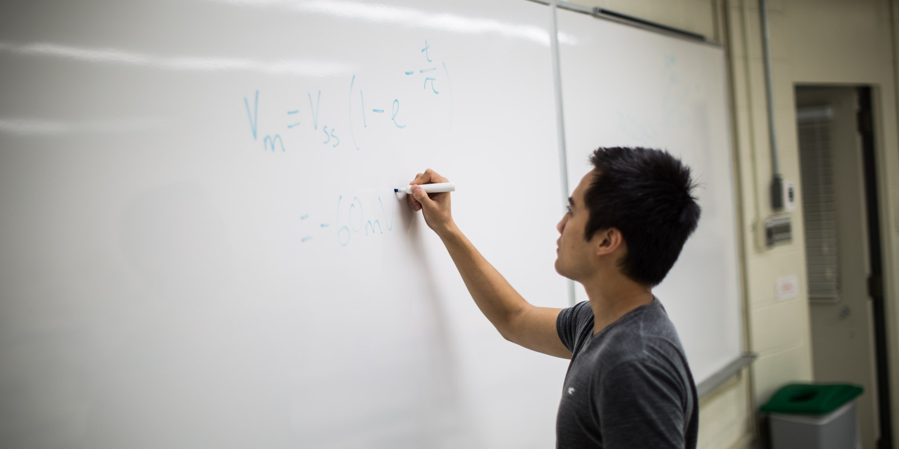

U2

The Core of Physiology
U2 is the most vigorous year of the program. With our base of knowledge in earlier years, we take courses that bridge the gap between textbook science and the frontiers of research. This is the year that we get an in-depth yet varied taste of research initiatives and different body systems. We will gain a conceptual understanding of how intricately our beautiful bodies thrive.
While the 300 level physiology courses are known to be killer, it is important to get involved with the community of people you will be with in all of your classes. Don’t forget to come out to events run by PULS to meet people with similar interests, make friends, and have an excellent year!
Courses
A comparison table that summarizes these core courses can be found below. Advice given here is purely based on students' opinions and past experiences. They are in no way an accurate reflection of what the courses have to give, and views expressed here are not necessarily the views expressed by the Department of Physiology, the Faculty of Science, or McGill University.
PHGY 311 - Channels, Synapses, and Hormones
In-depth presentation of experimental results and hypotheses on cellular communication in the nervous system and the endocrine system.
Prerequisite: PHGY 209 or Permission of Course Coordinator
PHGY 312 - Respiratory, Renal, and Cardiovascular Physiology
In-depth presentation of experimental results and hypothese underlying our current understanding of topics in renal, respiratory and cardiovascular functions explored beyond the introductory level.
Prerequisite: PHGY 209, PHGY 210
PHGY 313 - Blood, Gastrointestinal, and Immune Systems Physiology
In-depth presentation of experimental results and hypotheses underlying our current understanding of the physiology topics in immunology, blood and fluids, and gastrointestinal physiology.
Prerequisite: PHGY 209, PHGY 210, PHGY 311
Or permission from Course Coordinators
PHGY 314 - Integrative Neuroscience
In-depth presentation of experimental results and hypotheses underlying our current understanding of how single neurons and ensembles of neurons encode sensory information, generate movement, and control cognitive functions such as emotion, learning, and memory, during voluntary behaviors.
Prerequisite: PHGY 209
| Course | Pros | Cons | Evaluation |
|---|---|---|---|
| PHGY 311: Channels, Synapses & Hormones Fall 2017 |
|
|
|
| PHGY 312: Respiratory, Renal, & Cardiovascular Physiology Winter 2018 |
|
|
|
| PHGY 313: Blood, Gastrointestinal, & Immune Systems Physiology Winter 2018 |
|
|
|
| PHGY 314: Integrative Neuroscience Fall 2017 |
|
|
|